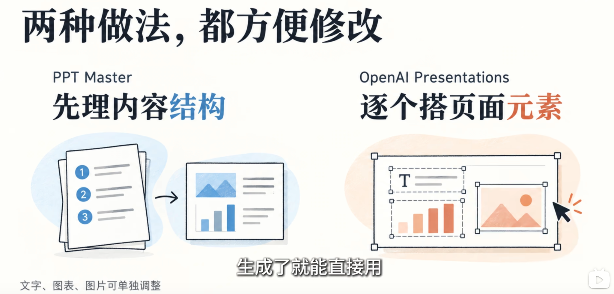

Style Collection — Visual Archive
个人收藏的视觉风格档案：每种风格附简介与例图，作为日后创作与约稿的视觉参照。
目录 Contents
扁平化手绘插画风格的知识科普幻灯片，极简线稿插画，轻微手绘水彩色块。

卡片式布局 + 3D 软质拟物 + 轻毛玻璃，Apple / Notion / Linear 式的现代产品页，明亮、友好、专业，模块化重复，清晰的信息层级，高清细腻，无杂乱装饰。
科技蓝信息图，分章节、图文并茂的知识海报，常见于公众号、小红书、技术科普。